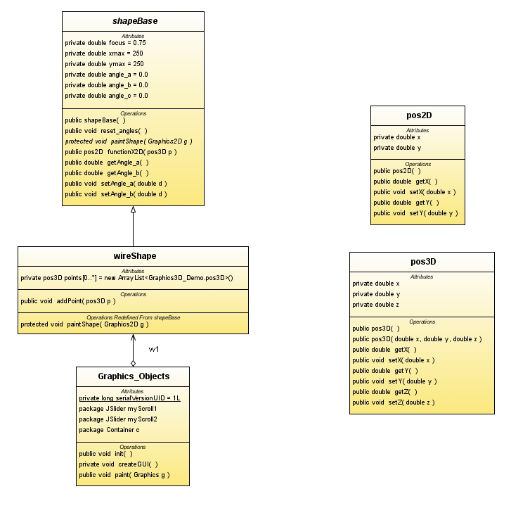

Supports the creation of 3D Shapes in Java. This package can be used as a basis
to create more complex Java 3D shapes for games or other uses.
To understand the architecture, try running the example driver and
spinning the wire shape using the keyboard. The up/down arrows tilt
one angle, the left/right keys spin another angle. The shape stays the
same size and is anchored to the center of the screen.
Last updated Fall 2008.

Package Specification
No Specifications required other than the standard Java 1.3 API.
Related Documentation
For tutorials and support, please see:
@since today